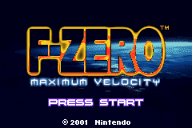

F-Zero: Maximum Velocity

Complete on 2019-5-25
3 / 5
Release Date: Jun 12, 2001
Meta Score: 86
Screenshots

Notes
Decent futuristic arcadey racer. Very slidy and hard until I discovered the trick of tapping the throttle to corner effortlessly, then the game became kind of easy. Wierdly the game doesn't give you any kind of result when finishing a grand prix, but I did all of them so I'm calling it complete.